第 2 章 图像处理基础#
本章解决：图像在计算机里是什么——二值、灰度、彩色三种表示，以及"第几行第几列"的坐标体系；像素怎么读、怎么写（索引访问与
item）；怎么用切片圈出感兴趣区域（ROI），整块复制、打码、搬到另一幅图上；怎么把彩色图拆成 B/G/R 三张单通道灰度图，再按任意顺序合回去（split/merge）；最后怎么读出图像的shape、size、dtype。学完本章，图像就是一个可任意下标的数组，每个像素、每块区域、每个通道都随手可取。
运行环境约定
本章代码引用本目录根下的素材（picture1.jpg、picture12.jpg 等），路径写作相对路径。运行时工作目录需为 数字图像处理-python 根目录，否则 imread 返回 None。原书用 lena.bmp、lenacolor.png、dollar.bmp 演示，本章统一换成素材目录里的图片：picture1.jpg 顶替 lena（1080×1920×3），picture12.jpg 顶替 dollar（1522×1080×3）。代码逻辑一字未改，控制台打印的具体像素值会随图片不同而不同。
2.0 本章导图#
2.1 图像的基本表示方法#
计算机不存"画面"，只存数字。做法是把图像划分成栅格状排列的小方块，每一个小方块是一个独立的处理单位，称为像素点（pixel）。整幅图就是一个数据集（矩阵），行、列两个方向排开。
2.1.1 二值图像#
二值图像（binary image）仅包含黑色与白色两种颜色。以字母 A 为例：把白色像素点记为"1"，黑色像素点记为"0"，图像就变成一张 0/1 矩阵。因为只有两种取值，一个比特位（0 或 1）就能表示一个像素。
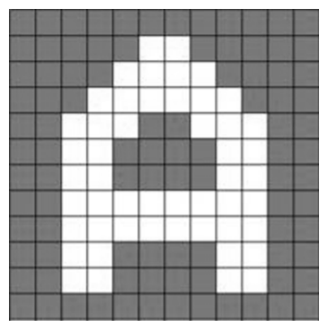
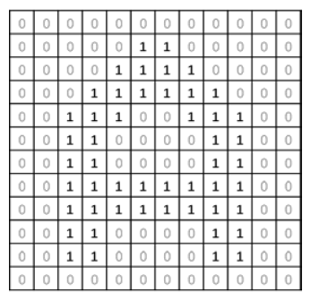
二值图的优点是想得简单、存得省；缺点是只有黑白两色，表现不了细节。
2.1.2 灰度图像#
想表现更多细节，就得用更多颜色。灰度图像（grayscale image）把亮度分成 256 个灰度级（gray level），用区间 \([0, 255]\) 表示：
- 数值 255 表示纯白色；
- 数值 0 表示纯黑色；
- 中间数值表示从纯白到纯黑之间不同级别的灰。
256 个数值正好用一个字节（8 位二进制）装下，这也是灰度图最常见的存储方式。表 2-1 是部分二进制值与灰度的对应关系。
| 二进制值 | 十进制值 | 颜色 |
|---|---|---|
| 0000 0000 | 0 | 纯黑色 |
| 0001 0000 | 16 | 深灰色 |
| 0010 0000 | 32 | 深灰色 |
| 0100 0000 | 64 | 深灰色 |
| 1000 0000 | 128 | 浅灰色 |
| 1010 0110 | 166 | 浅灰色 |
| 1011 1100 | 188 | 浅灰色 |
| 1100 1000 | 200 | 浅灰色 |
| 1110 0001 | 225 | 浅灰色 |
| 1111 1111 | 255 | 纯白色 |
于是灰度图在计算机里就是一个各行各列取值都落在 \([0, 255]\) 的矩阵。
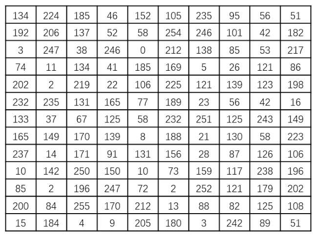
二值图像有时也用 8 位存：白色记 255、黑色记 0。这时图里只有 0 和 255 两种灰度级，没有中间值——只是"看起来像灰度图"的二值图。
2.1.3 彩色图像#
彩色图像能表现更丰富的细节，也更常见。
神经生理学实验发现，视网膜上有三种颜色感受器，分别感受红、绿、蓝，即三基色（three primary colors）。自然界常见的色光都可以由三基色按比例混合而成。此外，从光学角度可把颜色解析为主波长、纯度、明度；从心理学与视觉角度可解析为色调、饱和度、亮度。这些用不同方式表述颜色的模式，统称色彩空间（color space），也叫颜色空间、颜色模式。不同色彩空间之间可以按公式互相转换。
最常用的是 RGB 色彩空间：R（red，红）、G（green，绿）、B（blue，蓝）三个通道，每个通道取值范围 \([0, 255]\)，用三个通道的组合表示一种颜色。通俗理解：三个油漆桶分别装红、绿、蓝漆，各取 0~255 个单位混合，就调出一种新颜色。组合总数：
即常见的 1670 万色。表 2-2 是几组典型取值。
| R 值 | G 值 | B 值 | RGB 值 | 颜色 |
|---|---|---|---|---|
| 0 | 0 | 0 | (0,0,0) | 纯黑色 |
| 255 | 255 | 255 | (255,255,255) | 纯白色 |
| 255 | 0 | 0 | (255,0,0) | 红色 |
| 0 | 255 | 0 | (0,255,0) | 绿色 |
| 0 | 0 | 255 | (0,0,255) | 蓝色 |
| 114 | 141 | 216 | (114,141,216) | 天蓝色 |
| 139 | 69 | 19 | (139,69,19) | 棕色 |
一幅彩色图可以拆成 R、G、B 三张图来看，每一张通道图本身都是一幅独立的灰度图：通道图上某点的亮度，就是原图该点在这个通道上的分量。
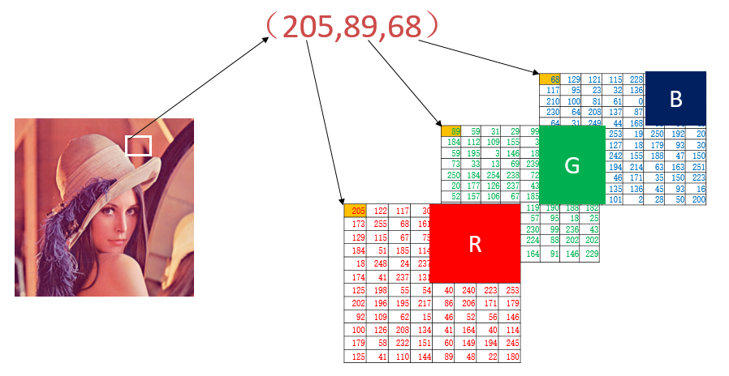
因此彩色图用三维数组表示。标准 RGB 顺序是 R→G→B；OpenCV 里是 B→G→R：
- 第 1 个通道保存 B 通道信息；
- 第 2 个通道保存 G 通道信息；
- 第 3 个通道保存 R 通道信息。
表 2-2 的取值顺序别照搬到代码里
表 2-2 按 R、G、B 排列，OpenCV 数组按 B、G、R 排列。想在 OpenCV 里得到天蓝色，要写 img[i,j] = [216, 141, 114]；照书写 [114, 141, 216]，得到的是偏红的颜色。这个坑在 2.5 节合并通道时会再次出现。
拓展：OpenCV 为什么用 BGR
一种通行说法是历史包袱：OpenCV 诞生时大量图像采集设备与 Windows 位图（BMP）都按 BGR 顺序在内存里排像素，直接沿用可以少一次全图翻转。结果就是 OpenCV 的 imread、imwrite、imshow 全链路默认 BGR，只有 cvtColor 里带 BGR2RGB 之类的常量时才需要显式转换（第 4 章详讲）。
2.2 像素处理#
像素是图像构成的基本单位。在 OpenCV for Python 里，图像就是 Numpy 的数组，所以"处理像素"就是"给数组元素赋值"——用位置索引访问、修改即可。
2.2.1 灰度图像：读一个点、改一个点#
一个 OpenCV 灰度图像是一个二维数组，image[0,0] 访问第 0 行第 0 列的像素点。行、列序号都从 0 开始，第 0 行第 0 列位于图像左上角：第 1 个索引是行，第 2 个索引是列。
先用 Numpy 造一个 8×8 的全零数组模拟黑图，试试读写。
【例 2.1】生成全零二维数组，模拟一幅黑色图像，并访问、修改它。
# ===== 2.2 例 2.1：8×8 全零数组 = 一幅纯黑图像 =====
import cv2
import numpy as np
img = np.zeros((8, 8), dtype=np.uint8) # 8 行 8 列，全 0；uint8 保证每像素 0~255
print("img=\n", img) # 打印就是 8×8 的零矩阵
cv2.imshow("one", img) # 窗口只有 8×8 像素，很小，纯黑
print("读取像素点img[0,3]=", img[0, 3]) # 第 0 行第 3 列 → 0
img[0, 3] = 255 # 把该点置为 255（白）
print("修改后img=\n", img)
print("读取修改后像素点img[0,3]=", img[0, 3])
cv2.imshow("two", img) # 顶边中间多出一个白点
cv2.waitKey()
cv2.destroyAllWindows()
控制台输出：
img=
[[0 0 0 0 0 0 0 0]
[0 0 0 0 0 0 0 0]
...
[0 0 0 0 0 0 0 0]]
读取像素点img[0,3]= 0
修改后img=
[[ 0 0 0 255 0 0 0 0]
[ 0 0 0 0 0 0 0 0]
...
[ 0 0 0 0 0 0 0 0]]
读取修改后像素点img[0,3]= 255
两个窗口分别对应改前、改后：one 全黑；two 在顶部靠近中间有一个白点（就是第 0 行第 3 列那一个像素）。窗口太小，屏幕上就是一个白点，肉眼几乎看不清——但这已经证明了二维数组与图像一一对应。
原书笔误：OpenCV 的最小数据类型
原书 2.2 节开头写"在 OpenCV 中，最小的数据类型是无符号的 8 位数"。这句不准确：OpenCV 的 Mat 支持 CV_8U、CV_8S、CV_16U、CV_16S、CV_32S、CV_32F、CV_64F，并没有"最小就是 8 位无符号"的说法。真正成立的是后半句——OpenCV 没有 1 位的二值类型，所以二值图只能借 8 位通道存成 0 与 255，看起来像灰度图。
【例 2.2】读取灰度图像，修改一块区域。
# ===== 2.2 例 2.2：把一块矩形区域刷成白色 =====
import cv2
img = cv2.imread("picture1.jpg", 0) # flags=0：直接读成单通道灰度图（原书 lena.bmp）
cv2.imshow("before", img)
for i in range(10, 100): # 第 10~99 行，共 90 行
for j in range(80, 100): # 第 80~99 列，共 20 列
img[i, j] = 255 # 交叉区域全刷成白
cv2.imshow("after", img)
cv2.waitKey()
cv2.destroyAllWindows()
改后的图上，左上偏左位置出现一条 90 行 × 20 列的白色竖条。灰度数组里没有通道维，一个赋值就把一个像素的亮度改完。
2.2.2 彩色图像：三个通道一起读#
RGB 彩色图读进 OpenCV 后，按 B→G→R 的顺序存成一个三维数组，形状为（行数, 列数, 3）。一幅 R 行 × C 列的原始图，在内存里的排布是：
- 第 0 行：
B G R、B G R、…（共 C 组，每组是一个像素的三个通道值）； - 第 1 行：同样一组组排下去；
- …
- 第 R−1 行（末行）：最后一组
B G R。
也就是说，同一像素的三个通道值相邻存放，同一行的像素连续存放。
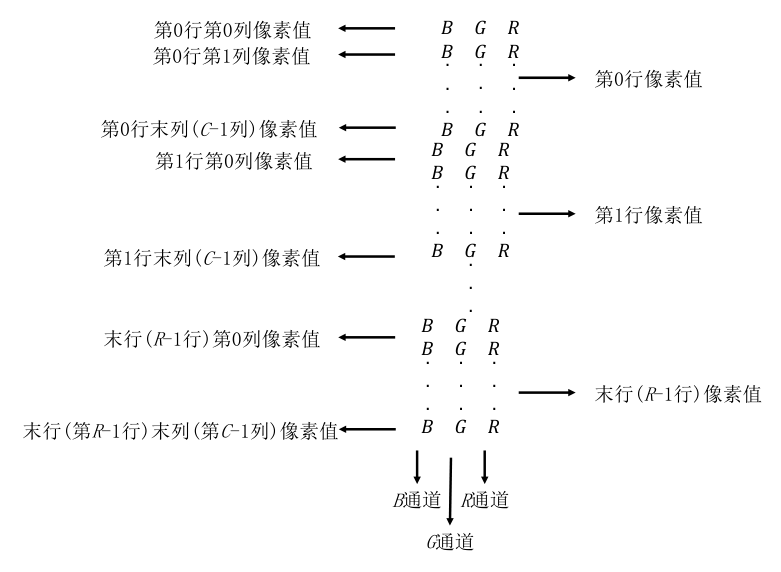
赋值时索引是 image[行, 列, 通道]：
- 第 1 个索引：第几行；
- 第 2 个索引：第几列；
- 第 3 个索引：第几个颜色通道（0=B，1=G，2=R）。
假设有一幅纯红图像（R=255，G=0，B=0），四种访问方式的结果完全不同：
img[0,0]：第 0 行第 0 列这一点的 BGR 三元组，得到[0, 0, 255]（B=0、G=0、R=255）；img[0,0,0]：第 0 个通道即 B 通道，得到 0；img[0,0,1]：第 1 个通道即 G 通道，得到 0；img[0,0,2]：第 2 个通道即 R 通道，得到 255。
【例 2.3】用 Numpy 生成三个三维数组，观察三个通道值对颜色的影响。
# ===== 2.2 例 2.3：把三个通道分别点亮，看颜色 =====
import numpy as np
import cv2
# ---------- 蓝色通道 ----------
blue = np.zeros((300, 300, 3), dtype=np.uint8) # 300×300，3 通道，全 0
blue[:, :, 0] = 255 # 第 0 个通道（B）全置 255
print("blue[0,0]=", blue[0, 0]) # [255 0 0]：B=255 → 蓝
cv2.imshow("blue", blue)
# ---------- 绿色通道 ----------
green = np.zeros((300, 300, 3), dtype=np.uint8)
green[:, :, 1] = 255 # 第 1 个通道（G）全置 255
print("green[0,0]=", green[0, 0]) # [ 0 255 0]：G=255 → 绿
cv2.imshow("green", green)
# ---------- 红色通道 ----------
red = np.zeros((300, 300, 3), dtype=np.uint8)
red[:, :, 2] = 255 # 第 2 个通道（R）全置 255
print("red[0,0]=", red[0, 0]) # [ 0 0 255]：R=255 → 红
cv2.imshow("red", red)
cv2.waitKey()
cv2.destroyAllWindows()
三个窗口分别是纯蓝、纯绿、纯红。这里 [:, :, 0] 的意思是"所有行、所有列、第 0 个通道"——: 表示该维全取。原书把整个 300×300×3 数组 print 出来，输出几十万行，实际只需要看一两个像素就能确认通道对应关系。
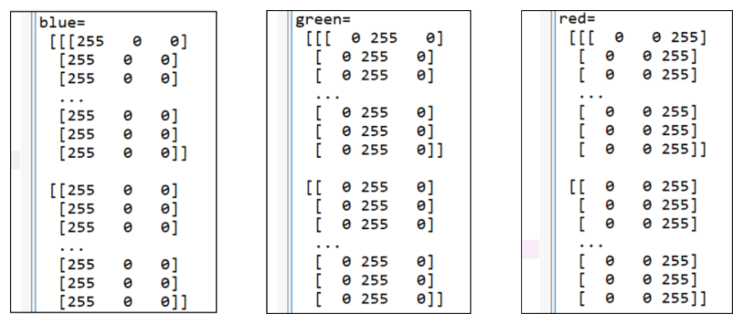
【例 2.4】三条竖条，各占一个通道。
# ===== 2.2 例 2.4：左中右三条竖条分别点亮 B、G、R =====
import numpy as np
import cv2
img = np.zeros((300, 300, 3), dtype=np.uint8)
img[:, 0:100, 0] = 255 # 第 0~99 列：B 通道拉满
img[:, 100:200, 1] = 255 # 第 100~199 列：G 通道拉满
img[:, 200:300, 2] = 255 # 第 200~299 列：R 通道拉满
print("img[0,0]=", img[0, 0]) # [255 0 0]
print("img[0,150]=", img[0, 150]) # [ 0 255 0]
print("img[0,250]=", img[0, 250]) # [ 0 0 255]
cv2.imshow("img", img)
cv2.waitKey()
cv2.destroyAllWindows()
图像从左到右是蓝、绿、红三条竖条。这里把 2.5 节要讲的"通道"提前用了一遍：img[:, 0:100, 0] 是"所有行、第 0~99 列、第 0 个通道"的一块区域。
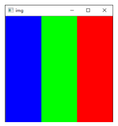
【例 2.5】2 行 4 列 3 通道的小数组，逐个索引读写。
# ===== 2.2 例 2.5：小数组上练彩色索引 =====
import numpy as np
img = np.zeros((2, 4, 3), dtype=np.uint8) # 2 行 4 列 3 通道，全 0
print("img=\n", img)
print("读取像素点img[0,3]=", img[0, 3]) # 第 0 行第 3 列的 BGR 三元组
print("读取像素点img[1,2,2]=", img[1, 2, 2]) # 第 1 行第 2 列第 2 通道（R）
img[0, 3] = 255 # 第 0 行第 3 列：三通道一起置 255 → 白
img[0, 0] = [66, 77, 88] # 第 0 行第 0 列：分别置 B=66、G=77、R=88
img[1, 1, 1] = 3 # 第 1 行第 1 列 G 通道 → 3
img[1, 2, 2] = 4 # 第 1 行第 2 列 R 通道 → 4
img[0, 2, 0] = 5 # 第 0 行第 2 列 B 通道 → 5
print("修改后img\n", img)
print("读取修改后像素点img[1,2,2]=", img[1, 2, 2])
九条语句的作用：
zeros()生成 2×4×3 数组，对应一幅"2 行 4 列 3 通道"的 BGR 图；print(img)看当前值，全 0；img[0,3]读第 0 行第 3 列的 B、G、R 三个像素点；img[1,2,2]读第 1 行第 2 列第 2 个通道的像素点；img[0,3]=255把该位置的 B、G、R 三个通道一并改成 255；img[0,0]=[66,77,88]把该位置三通道依次改为 66、77、88（列表长度必须等于 3）；img[1,1,1]=3只改 G 通道；img[1,2,2]=4只改 R 通道；img[0,2,0]=5只改 B 通道。
输出（第 0 行第 3 列的 [255 255 255]、第 0 行第 2 列的 [5 0 0] 就是上面第 5、9 条的效果）：
img=
[[[0 0 0]
[0 0 0]
[0 0 0]
[0 0 0]]
[[0 0 0]
[0 0 0]
[0 0 0]
[0 0 0]]]
读取像素点img[0,3]= [0 0 0]
读取像素点img[1,2,2]= 0
修改后img
[[[ 66 77 88]
[ 0 0 0]
[ 5 0 0]
[255 255 255]]
[[ 0 0 0]
[ 0 3 0]
[ 0 0 4]
[ 0 0 0]]]
读取修改后像素点img[1,2,2]= 4
【例 2.6】在一幅真实彩色图上改三个区域。
# ===== 2.2 例 2.6：左上角刷白、刷灰、刷黑三块 =====
import cv2
img = cv2.imread("picture1.jpg") # 默认读成 3 通道 BGR（原书 lenacolor.png）
cv2.imshow("before", img)
print("访问img[0,0]=", img[0, 0]) # 第 0 行第 0 列的 BGR 三元组
print("访问img[0,0,0]=", img[0, 0, 0]) # B
print("访问img[0,0,1]=", img[0, 0, 1]) # G
print("访问img[0,0,2]=", img[0, 0, 2]) # R
print("访问img[50,0]=", img[50, 0])
print("访问img[100,0]=", img[100, 0])
# 区域 1：第 0~49 行 × 第 0~99 列 → 白
for i in range(0, 50):
for j in range(0, 100):
for k in range(0, 3):
img[i, j, k] = 255
# 区域 2：第 50~99 行 × 第 0~99 列 → 灰
for i in range(50, 100):
for j in range(0, 100):
img[i, j] = [128, 128, 128]
# 区域 3：第 100~149 行 × 第 0~99 列 → 黑
for i in range(100, 150):
for j in range(0, 100):
img[i, j] = 0
cv2.imshow("after", img)
print("修改后img[0,0]=", img[0, 0])
print("修改后img[0,0,0]=", img[0, 0, 0])
print("修改后img[0,0,1]=", img[0, 0, 1])
print("修改后img[0,0,2]=", img[0, 0, 2])
print("修改后img[50,0]=", img[50, 0])
print("修改后img[100,0]=", img[100, 0])
cv2.waitKey()
cv2.destroyAllWindows()
控制台输出（picture1.jpg）：
访问img[0,0]= [250 253 228]
访问img[0,0,0]= 250
访问img[0,0,1]= 253
访问img[0,0,2]= 228
访问img[50,0]= [247 242 221]
访问img[100,0]= [253 249 230]
修改后img[0,0]= [255 255 255]
修改后img[0,0,0]= 255
修改后img[0,0,1]= 255
修改后img[0,0,2]= 255
修改后img[50,0]= [128 128 128]
修改后img[100,0]= [0 0 0]
三个区域上下相接，在左上角拼出一条 150 行 × 100 列的"白—灰—黑"色带。三种写法要分清：
- 三层循环
img[i,j,k]=255：逐个通道改，最笨也最直观； img[i,j]=[128,128,128]：给一个像素的 BGR 三个分量同时赋值（灰就是三通道相等）；img[i,j]=0：标量广播到三个通道，等于[0,0,0]，纯黑。
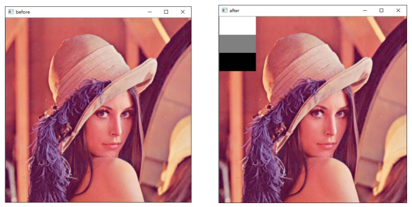
拓展：三层循环可以一行切片代替
区域 1 的 50×100×3 次赋值，等价于 img[0:50, 0:100] = 255：切片圈出整块区域，标量自动广播到形状里的每个元素。三种区域的写法分别是 img[0:50,0:100] = 255、= [128,128,128]、= 0。速度差出两个数量级——这就是 2.4 节 ROI 切片要讲的东西。
2.3 使用 numpy.array 访问像素#
numpy.array 提供了 item() 与 itemset() 两个方法读写单个像素值。书上说它们"经过优化处理，效率比索引高、可读性更好"。
语法格式：
item(行, 列) # 灰度图：读第 行 第 列 的像素值
itemset(索引值, 新值) # 灰度图：改第 索引值 处的像素值
item(行, 列, 通道) # 彩色图：读某通道的像素值
itemset(三元组索引值, 新值) # 彩色图：改某通道的像素值
先看这条：itemset 在 NumPy 2.0 已被移除
原书四个例题（2.7、2.9、2.10、2.12）都用 itemset。NumPy 2.0 起该方法删除，在 numpy 2.2 上运行会直接抛：
AttributeError: `itemset` was removed from the ndarray class in NumPy 2.0.
Use `arr[index] = value` instead.
官方给的替代写法就是索引赋值，两者等价（itemset 原本也只是"稍快一点的 a[args]=value"）：
| 原书写法 | 现在写法 |
|---|---|
img.itemset((3,2), 255) |
img[3, 2] = 255 |
img.itemset((i,j,k), 255) |
img[i, j, k] = 255 |
item() 仍然可用，读单个值的代码不用改。下面的例题按新写法给出，并在注释里标出原书写法。
【例 2.7】5×5 随机数组模拟灰度图，读写单个像素。
# ===== 2.3 例 2.7：item 读、索引写 =====
import numpy as np
img = np.random.randint(10, 99, size=[5, 5], dtype=np.uint8) # 10~98 的随机整数
print("img=\n", img)
print("读取像素点img.item(3,2)=", img.item(3, 2)) # 第 3 行第 2 列
img[3, 2] = 255 # 原书：img.itemset((3,2),255)
print("修改后img=\n", img)
print("修改后像素点img.item(3,2)=", img.item(3, 2))
输出示例（每次运行随机数不同，原书示例是 61 → 255）：
img=
[[69 11 79 35 84]
[87 10 63 12 20]
[31 67 68 16 45]
[81 26 61 51 28]
[33 94 18 71 53]]
读取像素点img.item(3,2)= 61
修改后img=
[[ 69 11 79 35 84]
[ 87 10 63 12 20]
[ 31 67 68 16 45]
[ 81 26 255 51 28]
[ 33 94 18 71 53]]
修改后像素点img.item(3,2)= 255
第 3 行第 2 列那个 61 变成了 255，其余元素一个没动。
【例 2.8】生成一幅 256×256 的随机灰度图。
# ===== 2.3 例 2.8：全随机灰度图 =====
import numpy as np
import cv2
img = np.random.randint(0, 256, size=[256, 256], dtype=np.uint8) # 0~255 全覆盖
cv2.imshow("demo", img) # 看起来就是电视雪花噪点
cv2.waitKey()
cv2.destroyAllWindows()
注意 randint 的上界取不到：写 256 才能取到 255；写成 255 的话最大只有 254。
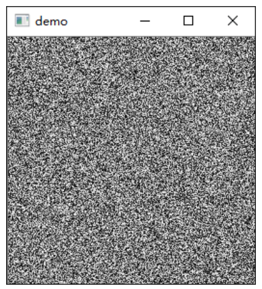
【例 2.9】真实灰度图上用 item/itemset 读改。
# ===== 2.3 例 2.9：单个点 + 整块区域 =====
import cv2
img = cv2.imread("picture1.jpg", 0) # 灰度读入（原书 lena.bmp）
print("读取像素点img.item(3,2)=", img.item(3, 2))
img[3, 2] = 255 # 原书：img.itemset((3,2),255)
print("修改后像素点img.item(3,2)=", img.item(3, 2))
cv2.imshow("before", img)
for i in range(10, 100): # 第 10~99 行
for j in range(80, 100): # 第 80~99 列
img[i, j] = 255 # 原书：img.itemset((i,j),255)
cv2.imshow("after", img)
cv2.waitKey()
cv2.destroyAllWindows()
【例 2.10】2×4×3 随机三维数组，按通道读写。
# ===== 2.3 例 2.10：彩色图的 item 必须给三个索引 =====
import numpy as np
img = np.random.randint(10, 99, size=[2, 4, 3], dtype=np.uint8)
print("img=\n", img)
print("读取像素点img[1,2,0]=", img.item(1, 2, 0)) # 第 1 行第 2 列 B 通道
print("读取像素点img[0,2,1]=", img.item(0, 2, 1)) # 第 0 行第 2 列 G 通道
print("读取像素点img[1,0,2]=", img.item(1, 0, 2)) # 第 1 行第 0 列 R 通道
img[1, 2, 0] = 255 # 原书：img.itemset((1,2,0),255)
img[0, 2, 1] = 255
img[1, 0, 2] = 255
print("修改后img=\n", img)
print("修改后像素点img[1,2,0]=", img.item(1, 2, 0))
print("修改后像素点img[0,2,1]=", img.item(0, 2, 1))
print("修改后像素点img[1,0,2]=", img.item(1, 0, 2))
彩色图访问必须同时给行、列、通道三个索引。只给两个会报错：
因为少给一维，选中的是一整条像素（三个分量），不是单个值，item() 无法返回标量。
【例 2.11】生成 256×256×3 的随机彩色图。
# ===== 2.3 例 2.11：随机彩色噪点图 =====
import cv2
import numpy as np
img = np.random.randint(0, 256, size=[256, 256, 3], dtype=np.uint8)
cv2.imshow("demo", img) # 三通道各自随机，显示为彩色雪花
cv2.waitKey()
cv2.destroyAllWindows()
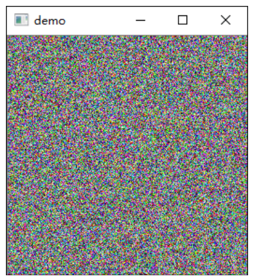
【例 2.12】真实彩色图上读改，并刷白一块区域。
# ===== 2.3 例 2.12：彩色图上读三点、刷白一块 =====
import cv2
img = cv2.imread("picture1.jpg") # 原书 lenacolor.png
cv2.imshow("before", img)
print("访问img.item(0,0,0)=", img.item(0, 0, 0)) # B
print("访问img.item(0,0,1)=", img.item(0, 0, 1)) # G
print("访问img.item(0,0,2)=", img.item(0, 0, 2)) # R
for i in range(0, 50): # 第 0~49 行
for j in range(0, 100): # 第 0~99 列
for k in range(0, 3): # 三个通道
img[i, j, k] = 255 # 原书：img.itemset((i,j,k),255)
cv2.imshow("after", img)
print("修改后img.item(0,0,0)=", img.item(0, 0, 0))
print("修改后img.item(0,0,1)=", img.item(0, 0, 1))
print("修改后img.item(0,0,2)=", img.item(0, 0, 2))
cv2.waitKey() # 原书此处漏了这两行，窗口会一闪而过
cv2.destroyAllWindows()
控制台输出（picture1.jpg，三通道都被改成 255）：
访问img.item(0,0,0)= 250
访问img.item(0,0,1)= 253
访问img.item(0,0,2)= 228
修改后img.item(0,0,0)= 255
修改后img.item(0,0,1)= 255
修改后img.item(0,0,2)= 255
2.4 感兴趣区域（ROI）#
图像处理时常只关心某一块特定区域，这块区域叫感兴趣区域（Region of Interest，ROI）。圈定 ROI 之后，可以把它当成一个整体操作：赋给变量、搬到别处、整块覆盖。
ROI 用切片表示，行在前、列在后，: 表示"全取"：
切片左闭右开：img[200:400, 200:400] 取的是第 200~399 行、第 200~399 列，正好 200 行 × 200 列。所以图中那个 200×200 的黑色 ROI 就是 img[200:400, 200:400]。
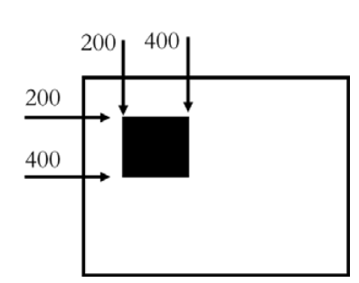
复制 ROI 到同一幅图的其他位置：
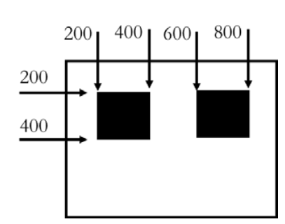
拓展：切片是视图，不是副本
a = img[200:400, 200:400] 只创建了一个"窗口"，np.shares_memory(img, a) 返回 True。改 a[i,j] 原图跟着变；反过来改原图，a 也变。想拿到独立副本必须 .copy()：
2.5.1 节拆通道也一样：b = img[:,:,0] 是视图，后面 img[:,:,0] = 0 会连 b 一起清零。
【例 2.13】截出脸部区域并显示。
# ===== 2.4 例 2.13：按坐标截一块 =====
import cv2
a = cv2.imread("picture1.jpg", cv2.IMREAD_UNCHANGED) # 保持原格式读入
face = a[220:400, 250:350] # 第 220~399 行 × 第 250~349 列
print(face.shape) # (180, 100, 3)：180 行 100 列
cv2.imshow("original", a)
cv2.imshow("face", face)
cv2.waitKey()
cv2.destroyAllWindows()
face 的形状是 180×100×3——行数是 400−220=180，列数是 350−250=100，左闭右开一眼就能算出来。
【例 2.14】给脸部打码。
# ===== 2.4 例 2.14：用随机数组覆盖 ROI =====
import cv2
import numpy as np
a = cv2.imread("picture1.jpg", cv2.IMREAD_UNCHANGED)
cv2.imshow("original", a)
face = np.random.randint(0, 256, (180, 100, 3)) # 与 ROI 同形状的随机数组（原书未指定 dtype）
a[220:400, 250:350] = face # 整块覆盖 = 打码
cv2.imshow("result", a)
cv2.waitKey()
cv2.destroyAllWindows()
关键在形状必须一致：ROI 是 180 行 100 列 3 通道，随机数组就得是 (180, 100, 3)。形状不匹配会被 NumPy 拒绝：
np.random.randint 不给 dtype 时返回 32 位整型，赋值进 uint8 数组时自动截断转换，结果正确但白占 4 倍内存。加 dtype=np.uint8 更干净。
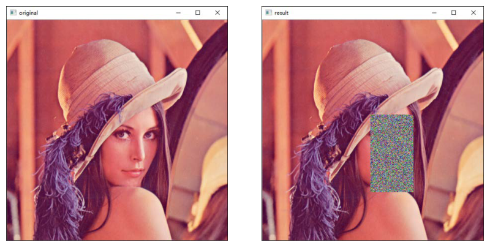
【例 2.15】把一幅图的 ROI 贴到另一幅图。
# ===== 2.4 例 2.15：跨图搬运 ROI =====
import cv2
src = cv2.imread("picture1.jpg", cv2.IMREAD_UNCHANGED) # 原书 lena512.bmp
dst = cv2.imread("picture12.jpg", cv2.IMREAD_UNCHANGED) # 原书 dollar.bmp
cv2.imshow("src", src)
cv2.imshow("dst", dst)
face = src[220:400, 250:350] # 源图 ROI：180 行 100 列
dst[160:340, 200:300] = face # 目标区域必须也是 180 行 100 列
cv2.imshow("result", dst)
cv2.waitKey()
cv2.destroyAllWindows()
两幅图尺寸不同没关系，只要目标区域与源 ROI 的形状相同就能贴上去。跨图搬运本质还是"切片赋值"，OpenCV 没有任何额外的拷贝函数。
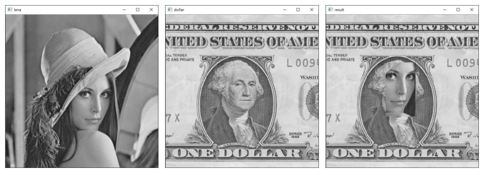
2.5 通道操作#
RGB 图像由 R、G、B 三个通道构成；在 OpenCV 里按 B→G→R 存储。通道可以拆开单独处理，也可以重新合并。
2.5.1 通道拆分#
方式一：索引拆分。第三个维度直接指定通道号：
每个结果都是二维数组，可以当灰度图显示——它记录的是该通道的强度。
【例 2.16】拆通道，再逐通道清零，看颜色怎么变。
# ===== 2.5.1 例 2.16：索引拆通道 + 逐通道置 0 =====
import cv2
lena = cv2.imread("picture1.jpg") # 原书 lenacolor.png
cv2.imshow("lena1", lena)
b = lena[:, :, 0] # B 通道（视图）
g = lena[:, :, 1] # G 通道
r = lena[:, :, 2] # R 通道
cv2.imshow("b", b)
cv2.imshow("g", g)
cv2.imshow("r", r)
lena[:, :, 0] = 0 # B 清零 → 画面偏黄（只剩 R+G）
cv2.imshow("lenab0", lena)
lena[:, :, 1] = 0 # 再清 G → 画面只剩红色分量
cv2.imshow("lenab0g0", lena)
cv2.waitKey()
cv2.destroyAllWindows()
六个窗口的对应关系：原图、B 通道灰度图、G 通道灰度图、R 通道灰度图、B 置零后的彩色图、B 与 G 都置零后的彩色图。
- B 通道清零，剩下 R+G 混合，整体偏黄；
- 再清 G，只剩 R 通道，画面变成红色调；
- 这跟例 2.3 的结论互为印证：某通道拉满 → 该通道的颜色；其余通道清零 → 只剩最后一个通道的颜色。
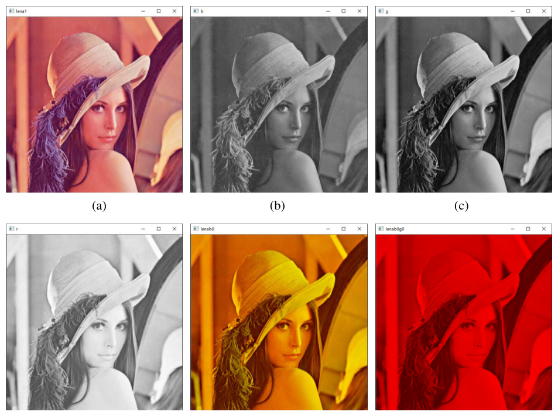
原书笔误：例 2.16 的代码分析
原书在解释三条拆通道语句时写成"g=lena[:,:,0] 获取了 G 通道""r=lena[:,:,0] 获取了 R 通道"，索引全是 0，与代码不符。正确是 g=lena[:,:,1]、r=lena[:,:,2]。
方式二：函数拆分。cv2.split() 一次拆出全部通道：
等价于逐条取：
【例 2.17】用 cv2.split() 拆通道。
# ===== 2.5.1 例 2.17：cv2.split 拆三通道 =====
import cv2
lena = cv2.imread("picture1.jpg")
b, g, r = cv2.split(lena) # 依次得到 B、G、R 三个二维数组
print(b.shape, g.shape, r.shape) # (1080, 1920) 三个都是单通道
cv2.imshow("B", b)
cv2.imshow("G", g)
cv2.imshow("R", r)
cv2.waitKey()
cv2.destroyAllWindows()
三个窗口都是灰度图。注意 split 的返回值顺序固定是 B、G、R，不会因为变量名叫 b,g,r 就自动对应——顺序是 OpenCV 定的。
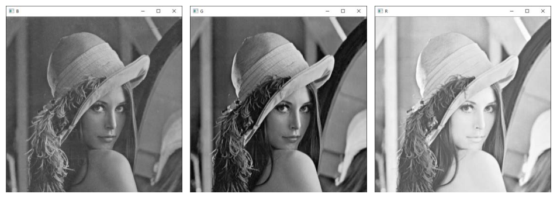
2.5.2 通道合并#
合并是拆分的逆过程：三张单通道灰度图拼回一幅三通道彩色图：
merge 参数是"按目标顺序排好的通道列表"，所以顺序由你定——这既是功能也是陷阱。
【例 2.18】两种顺序合并，看效果差异。
# ===== 2.5.2 例 2.18：merge 的顺序决定颜色 =====
import cv2
lena = cv2.imread("picture1.jpg")
b, g, r = cv2.split(lena) # 拆出三个通道
bgr = cv2.merge([b, g, r]) # B→G→R：与原图完全一致
rgb = cv2.merge([r, g, b]) # R→G→B：红蓝互换
cv2.imshow("lena", lena)
cv2.imshow("bgr", bgr)
cv2.imshow("rgb", rgb)
cv2.waitKey()
cv2.destroyAllWindows()
print((bgr == lena).all()) # True：bgr 与 lena 像素级完全相同
merge([b,g,r])的结果与imread读进来的图逐像素相同（实测(bgr == lena).all()为 True）；merge([r,g,b])把 R 通道塞进 B 位、B 通道塞进 R 位，红蓝互换：红衣服变蓝、蓝天变红。
由此可见，改变通道顺序，图像显示效果就会变——这也是第 1 章"BGR 不是 RGB"那个坑的另一种触发方式。
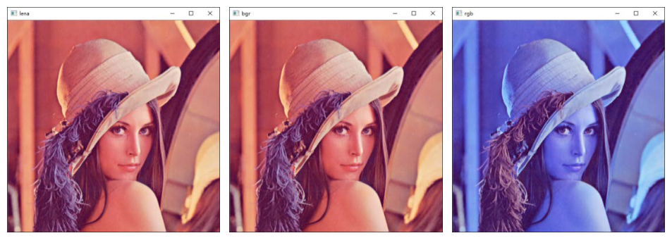
2.6 获取图像属性#
三个常用属性：
| 属性 | 含义 | 彩色图 | 灰度图 / 二值图 |
|---|---|---|---|
shape |
形状：行数、列数（、通道数） | (行, 列, 3) | (行, 列) |
size |
像素（元素）总数 | 行 × 列 × 3 | 行 × 列 |
dtype |
数据类型 | uint8 | uint8 |
shape 是最实用的一个：返回值的长度就是判别依据——有第三维是彩色图，只有两维是灰度图或二值图。
【例 2.19】观察灰度图与彩色图的属性。
# ===== 2.6 例 2.19：shape / size / dtype =====
import cv2
gray = cv2.imread("picture1.jpg", 0) # 原书 lena.bmp（256×256）
color = cv2.imread("picture1.jpg") # 原书 lenacolor.png（512×512×3）
print("图像gray 属性：")
print("gray.shape=", gray.shape) # (1080, 1920)
print("gray.size=", gray.size) # 2073600 = 1080×1920
print("gray.dtype=", gray.dtype) # uint8
print("图像color 属性：")
print("color.shape=", color.shape) # (1080, 1920, 3)
print("color.size=", color.size) # 6220800 = 1080×1920×3
print("color.dtype=", color.dtype) # uint8
实际输出（picture1.jpg）：
图像gray 属性：
gray.shape= (1080, 1920)
gray.size= 2073600
gray.dtype= uint8
图像color 属性：
color.shape= (1080, 1920, 3)
color.size= 6220800
color.dtype= uint8
三个数字的关系很好核对：2073600 = 1080×1920；6220800 = 1080×1920×3，正好是灰度图的 3 倍。size 数的是元素个数，不是字节数。
拓展：size 与 nbytes 不是一回事
size 是元素个数，nbytes 是占用的字节数，二者相等仅当每个元素 1 字节。picture1 的彩色图 size 与 nbytes 都是 6220800（uint8，1 字节/元素）；若换成 float32，size 不变而 nbytes 变成 24883200。判断图像多大用 shape，估算内存用 nbytes。
坑与陷阱#
8 个容易踩的坑
itemset已经不存在：NumPy 2.0 删除了ndarray.itemset，报错信息很明确——`itemset` was removed from the ndarray class in NumPy 2.0。全部换成img[i,j] = 值/img[i,j,k] = 值；item()不受影响。- 切片是视图，不是副本：
b = img[:,:,0]、roi = img[220:400,250:350]都只开了个窗口，np.shares_memory为 True。改b、改roi、或者img[:,:,0]=0，动的是同一块内存。要独立数据先.copy()。 - 彩色图给标量会改三个通道：
img[i,j] = 255等于三个通道全 255（白），不是"只改某个通道"。想只改一个通道必须写三个索引img[i,j,1] = 255。反过来，img[i,j] = [1,2]会报could not broadcast input array from shape (2,) into shape (3,)。 - 忘写
dtype=np.uint8：np.zeros((8,8))默认float64，imshow对 32 位浮点图按 0~1 映射并乘 255，0/255 的浮点数组显示出来几乎是全白；32 位整型数组则根本不在imshow支持的深度里，窗口没内容。 - 通道顺序是 BGR：
img[:,:,0]是蓝不是红；merge([r,g,b])得到的是红蓝互换图；照表 2-2 的 RGB 顺序写[114,141,216]也拿不到天蓝色。写通道常量前先念一遍"B、G、R"。 - ROI 形状必须严格一致：源 ROI 是 180×100×3，目标区域就得同形状，否则
could not broadcast input array from shape ... into shape ...。跨图搬运时尤其容易算错行数——记住"止号 − 起号"才是行数。 - 行列都从 0 起、切片左闭右开：
a[220:400]是第 220~399 行共 180 行，不是 181 行，也不含第 400 行；range(10,100)是 90 行。算错一位，ROI 就差一行、位置整体偏一格。 np.random.randint上界取不到：randint(0,255)永远出不了 255，要全区间必须写randint(0,256)；不给dtype时得到 32 位整型，赋进 uint8 数组虽能自动转换，但内存白占 4 倍。
速览#
- 二值图像只含黑白两色，白=1、黑=0，一个比特位即可；OpenCV 没有 1 位类型，实际用 uint8 存 0 与 255。
- 灰度图把亮度分成 256 个灰度级，区间 \([0,255]\)，255 纯白、0 纯黑，一个字节正好装下。
- 彩色图三个通道各 \([0,255]\)，共 256³ = 16 777 216 色；标准顺序 RGB，OpenCV 是 BGR，每个通道单独看都是一张灰度图。
- 图像就是 numpy 数组：灰度图二维、彩色图三维，
img[行, 列]/img[行, 列, 通道]，行列从 0 起，第 0 行第 0 列在左上角。 - 例 2.1 的关键结论：
np.zeros((8,8), dtype=np.uint8)即一幅黑图，img[0,3]=255只在顶边留下一个白点；img[0,3]从 0 变 255。 item(行,列[,通道])读单点；itemset(索引, 新值)写单点——后者在 NumPy 2.0 已删除，改用img[索引] = 新值。彩色图item必须给三个索引，少给报incorrect number of indices。- ROI 用切片
img[行起:行止, 列起:列止]，左闭右开；切片是视图，改它即改原图，需要独立数据用.copy()。 - 通道拆分两种：索引
img[:,:,0]（B）、img[:,:,1]（G）、img[:,:,2]（R）；或b,g,r = cv2.split(img)，返回顺序固定为 B、G、R。 - 通道合并
cv2.merge([b,g,r])，列表顺序决定输出布局：[b,g,r]还原原图（逐像素相等），[r,g,b]红蓝互换。 - 属性三件套：
shape（(行, 列, 通道)，看维度长度判别灰度/彩色）、size（元素总数 = 行×列×通道）、dtype（通常 uint8）。
术语速查#
| 英文 / 函数 | 中文 | 一句话 |
|---|---|---|
| pixel | 像素 | 图像的最小处理单位，栅格中的一个小方块 |
| pixel value | 像素值 | 该像素的数值，灰度图是 0~255 的一个数 |
| binary image | 二值图像 | 只有黑白两色，白=1、黑=0，一个比特位 |
| grayscale image | 灰度图像 | 256 个灰度级，一个字节存一个像素 |
| gray level | 灰度级 | 0~255 中的一个亮度等级 |
| color image | 彩色图像 | 三个通道组合表示颜色，需三维数组 |
| channel | 通道 | 颜色的一个分量；单看是一张灰度图 |
| color space | 色彩空间 | 表述颜色的模式（RGB、HSV 等），也称颜色空间、颜色模式 |
| three primary colors | 三基色 | 红、绿、蓝，可混合出常见色光 |
| BGR | 蓝-绿-红顺序 | OpenCV 的通道存储顺序，与 RGB 相反 |
| ndarray | 多维数组 | 图像在 Python 里的实际类型，来自 numpy |
| index | 索引 | img[行,列] 定位像素，行列都从 0 起 |
| item | 读单点 | img.item(行,列[,通道])，返回一个标量 |
| itemset | 写单点 | img.itemset(索引, 新值)，NumPy 2.0 已移除 |
| ROI（Region of Interest） | 感兴趣区域 | 用切片圈出的一块区域，可整体操作 |
| slice | 切片 | 起:止，左闭右开，止号取不到 |
| view | 视图 | 切片/取通道得到的内存窗口，与原数组共享数据 |
| copy | 副本 | .copy() 得到的独立数据，改它不影响原图 |
| cv2.split | 通道拆分 | 一次拆出 B、G、R 三个二维数组 |
| cv2.merge | 通道合并 | 按给定顺序把三个单通道合成彩色图 |
| shape | 形状 | (行, 列) 或 (行, 列, 3)，判断图像类型的依据 |
| size | 元素总数 | 行 × 列 × 通道，不是字节数 |
| dtype | 数据类型 | 图像元素类型，通常为 uint8 |
| uint8 | 无符号 8 位整型 | 取值 0~255，图像最常用的存储类型 |